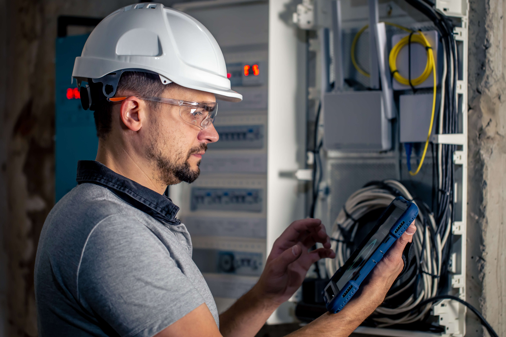
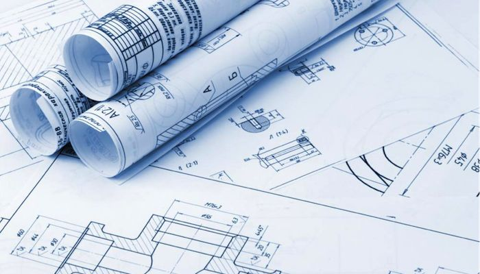
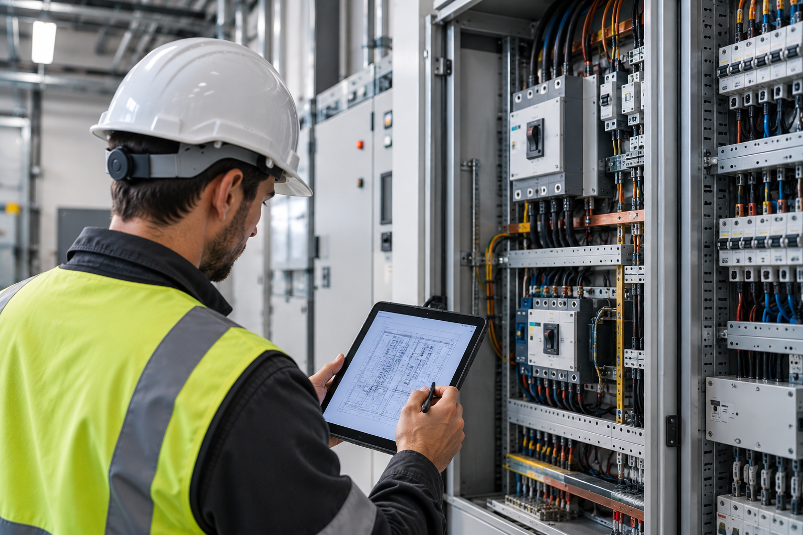

Segurança
Garanta a adequabilidade da infraestrutura elétrica, salvaguardando o imóvel e as pessoas.

Empresarial / Consultoria / Auditoria técnica
Avaliamos a infraestrutura elétrica para assegurar condições adequadas de exploração e prevenir incidentes que possam colocar em causa pessoas e edifícios.
Auditoria técnica
A MacWatts desenvolve auditorias técnicas à infraestrutura elétrica dos edifícios, assegurando condições adequadas de exploração e prevenindo incidentes que possam colocar em causa o edifício e as pessoas.
Estamos inscritos na DGEG e contamos com experiência no acompanhamento técnico de instalações elétricas, prestando também serviço de Técnico Responsável de Instalações Elétricas em Baixa Tensão (TRIESP).
No enquadramento do Decreto-Lei n.º 96/2017, determinadas instalações elétricas de serviço particular devem ser acompanhadas por um técnico responsável pela sua exploração.
Fale com a nossa equipa ↗
Prevenir antes de corrigir
Garanta a adequabilidade da infraestrutura elétrica, salvaguardando o imóvel e as pessoas.
Verificação técnica das condições de exploração e dos requisitos aplicáveis à instalação.
Acompanhamento por técnicos certificados, experientes e registados junto das entidades competentes.
Identificação de riscos, anomalias e ações corretivas para reduzir paragens e incidentes.

Acompanhamento técnico
A auditoria técnica permite mapear o estado da instalação, identificar pontos críticos e definir recomendações claras para melhorar a segurança e a exploração elétrica.